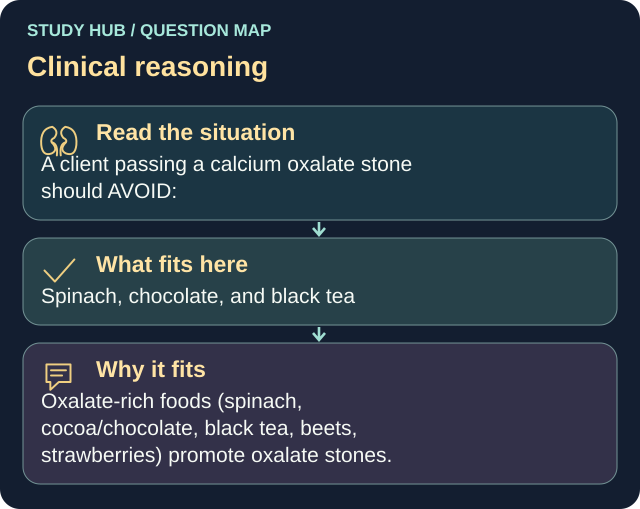

A client passing a calcium oxalate stone should AVOID:
Answer
Spinach, chocolate, and black tea
Reasoning
Oxalate-rich foods (spinach, cocoa/chocolate, black tea, beets, strawberries) promote oxalate stones.
Why the other answers do not fit
- White bread
- Lean chicken
- Apples
Shared reasoning for choices without a separate note: Oxalate-rich foods (spinach, cocoa/chocolate, black tea, beets, strawberries) promote oxalate stones.
